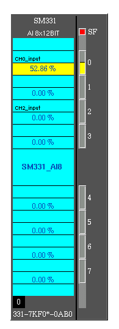
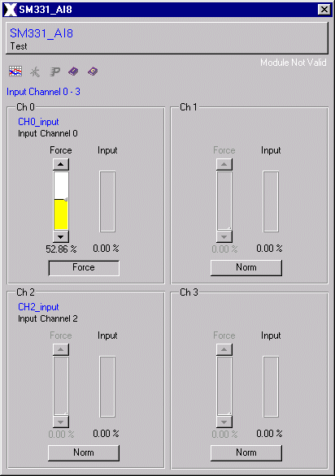

| Analog Output sm331_ai8 x 12Bit |
This analog input module SM 331 AI8 includes eight inputs with a selectable resolution of 9, 12 and 14 bit.
It can be used in a S7-300 or in a Profibus DP Slave-System (ET200M IM153).
The module converts the analog process
signal to a digital value with the selectet resolution.
Features | Installation | User Interface | Configuration | Implementation Notes | Modification History
The sm332_ai8 class is comprised of the following
components (files):
| Class Component | Description | File Name(s) |
| Class Color File | Defines the local color for the class. | sm331_ai8.color |
| Class File | Includes the process picture
representation and any popup
menus. |
sm331_ai8.symbol
|
| Symbol File | Symbol used in the class. | analogdevices_ai_selrange.symbol |
| Enumerator File | Defines the enumerator for the class. | sm331_ai8.enum |
| Graphic Files | Class Specific Graphic Files for both, class definition and documentation. | axclassdoku16.bmp
axclassdoku_grey16.bmp axinstanzdoku16.bmp axinstanzdoku_grey16.bmp axparam16.bmp axparam_grey16.bmp axservice16.bmp axservice_grey16.bmp axtrend16.bmp axtrend_grey16.bmp (and some documentation
|
| HTML Document | HTML document for Online Help. | sm331_ai8.htm |
Features | Installation | User Interface | Configuration | Implementation Notes | Modification History
The SM331 AI8 user interface includes a process picture representation and several popup menus. The SM331 AI8 process representation is shown in Figure 2. The SM331 AI8 popup menus include two operater interfaces. One shows Figure 3 and the second is simular to the first operater interface for the other four channels.
The SM331 AI8 process picture has a unique name identifier ($Instance) for the SM331 AI8 displayed in the middle of the picture (SM331_8AI). Each channel is visualized by a slider and a value display. The first four channels are displayed above the unique name identifier and the other four below. If a channel's value is forced by using the operater interface the rectangle above the value display change its color to red. The rectangle at the top right signalled a service fault and the black rectangle at the bottom left shows the module position.

Figure 2: SM331 AI8 Graphical Representation
Using the left mouse
button down at one of sliders on SM331 AI8 process
representation causes
the Operations Interface window, Figure 3, to be
opened on the computer
screen.

Figure 3: SM331 AI8 Operations Interface
The SM331 AI8 operater graphic also includes the Instance name or the Analog Input SM331 AI8 and below it there is a comment describing the Analog Input unit. The button which hosts the Instance name and the comment can close the popup.
The operater interface is splitted in four parts, for each channel one. The right slider shows always the real input value. With the button at the bottom of each channel section the mode could be changed from normal mode to force mode. Then the input value can be force by the left slider which isn't sensitive as long as the button shows "Norm". This means that input value is simulated with a variable value edited by a slider to test the plc programs without any I/O's.
The right text above the channel section
signalled whether the module or the data is valid. This text dis appear
only if the module and the data is valid.
Features | Installation | User Interface | Configuration | Implementation Notes | Modification History
The following table lists the configuration parameters
for the Analog Input
SM331 AI8. The parameter data type, the default
values and a brief
description are listed. The grey shaded rows cotains
parameters which must
not be changed.
|
|
Variable |
|
|
Description |
| 1 | CH0 | REAL | 0 | Input channel 0 |
| 2 | CH1 | REAL | 0 | Input channel 1 |
| 3 | CH2 | REAL | 0 | Input channel 2 |
| 4 | CH3 | REAL | 0 | Input channel 3 |
| 5 | CH4 | REAL | 0 | Input channel 4 |
| 6 | CH5 | REAL | 0 | Input channel 5 |
| 7 | CH6 | REAL | 0 | Input channel 6 |
| 8 | CH7 | REAL | 0 | Input channel 7 |
| 9 | Connection | STRING | ... | With the instance name of the following unit the next unit will be connected to this one. |
| 10 | DataValid | BOOL | NO | YES if the profibus DP communication is valid. |
| 11 | InputData[16] | USINT | 0 | Input data array used by profibus DP and handles the analog inputs of this module. |
| 12 | ModuleValid | BOOL | NO | YES if the module itself has no error. |
| 13 | error_msg[10] | STRING | ... | Error message array. |
| 14 | ModulePosition | USINT | 0 | Shows the position of the module in an order. |
| 15 | ModuleName | STRING | 6ES7
331-7KF0*-0AB0 |
It's the module name which is checked with the GSD file of the profibus DP slave (constant). |
| 16 | UsrPrmDataValid | BOOL | NO | YES if the user parameter data (UsrPrmData) is valid. |
| 17 | UsrPrmDataLen | USINT | 0 | The real UsrPrmData length of this module. |
| 18 | UsrPrmData[24] | USINT | 0 | User Parameter Data array used by profibus DP and handles the parameterization of the channels. |
| 19 | Force[8] | BOOL | NO | The bits in this array set the force module of each channel. |
| 20 | DataFormat | INT | 0 | Changes the data format S7/M7 - S5. Depends on DP slave. |
| 21 | NoiseFreq[4] | ENUM:NoiseSup | Hz50 | Select Interference frequency suppression for easch channel cluster. |
| 22 | Resolution[4] | ENUM:Resolution | VZ_12Bit | Depends on NoiseFreq. |
| 23 | ModuleRange[4] | ENUM:Config | deact. | Select measuring range and measuring mode for each channel cluster. |
| 24 | Globaldiag[4] | BOOL | NO | collecting diagnosis. |
| 25 | DiagWire[4] | BOOL | NO | wire breakage examination. |
| 26 | CycleAlarm | BOOL | NO | end of cycle alarm. |
| 27 | DiagAlarm | BOOL | NO | diagnosis alarm. |
| 28 | LimitAlarm | BOOL | NO | boundary value alarm. |
| 29 | H_Limit_C0 | INT | 0 | Upper limit channel cluster 0, channel 0. |
| 30 | L_Limit_C0 | INT | 0 | Lower limit channel cluster 0, channel 0. |
| 31 | H_Limit_C1 | INT | 0 | Upper limit channel cluster 1, channel 1. |
| 32 | L_Limit_C1 | INT | 0 | Lower limit channel cluster 1, channel 1. |
The "sm331_ai8.color" file contains the
SM331 AI8 class color definitions. This file holds all defined class color
schemes. The SM331 AI8 defined colors are:
| Color | Default RGB Values |
| S7-BG | 80/100/80 |
| S7-Label | 0/255/255 |
The "sm331_ai8.symbol" file contains the Analog Input SM331 AI8 class definition for AutomationX. This file holds the user interface, the pop-up menus, the class parameters, and the logic.
Features | Installation | User Interface | Configuration | Implementation Notes | Modification History
Qualities: The SM331 AI8 x 12Bit is characterized by the following qualities:
- 8 entries in 4 channel clusters
- measured value solution variable
per group (depending on adjusted integration time)
~ 9 bits + signs
~ 12 bits + signs
~ 14 bits + signs
- measuring mode optional per channel
cluster:
~ tension
~ current
~ resitance
~ temperature
- any measuring range selection per channel cluster
- parametriable diagnosis
- 2 channels with limit supervision
- parametriable boundary value alarm
- floating compared to the CPU
- floating compared to the load supply
(not at 2-write transducer)
Features | Installation | User Interface | Configuration | Implementation Notes | Modification History
The following table lists the modifications made
to the sm331_ai8 class.
| Item | Date
(m/d/y) |
Name | File | Description | Reason |
| 1 | 04/06/97 | Manfred Dobaj | Initial Design | ||
| 2 | 15/07/98 | Manfred Dobaj | Redesign the user interface | ||
| 3 | 23/02/99 | Jürgen Tossold | Graphical Class Standard |
Features | Installation | User Interface | Configuration | Implementation Notes | Modification History